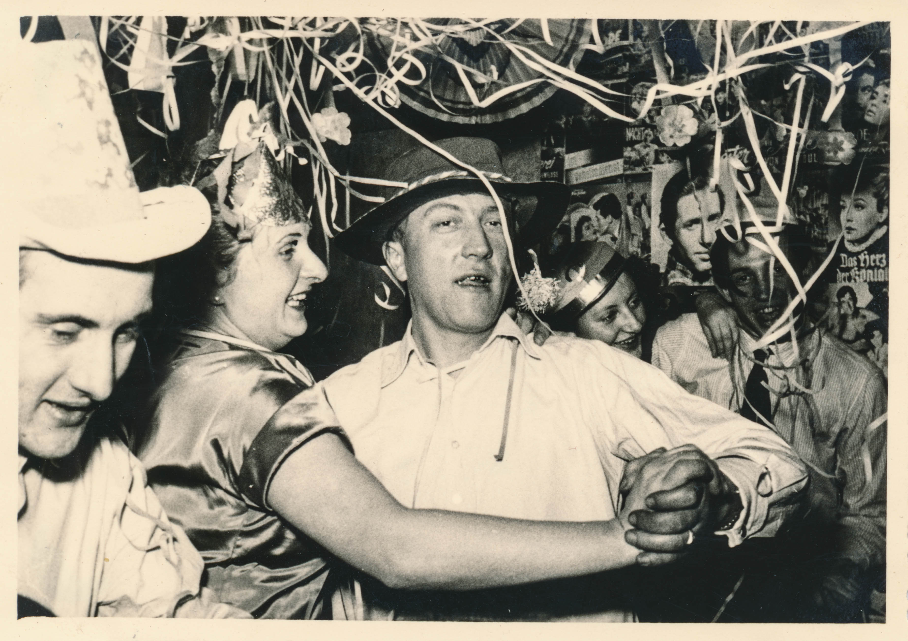

About Us
Welcome to Children's Lives Matter, a non-profit organization dedicated to improving the lives of children around the world.
At Children's Lives Matter, we believe that every child deserves access to proper nutrition, education, and healthcare. Our mission is to tackle malnutrition in schools and ensure that children have the opportunity to thrive and reach their full potential.
We work closely with communities, schools, and local organizations to implement sustainable programs that provide nutritious meals, educational support, and healthcare services to children in need.
Our ngo started from the late 2000s as a small mediocore business that ventured out and decided that malnutrition was a big issue and immediately we set our hearts on this problem, the owners Mr Ronald darcy and his wife ellie darcy founded this company in the beginning, it was thereafter passed to his grandkids and they now work with other people to run this organisation.Mr ronald was a very passionate individual who grew up in a poor household and knew what it felt like to not have enough food on the table, he decided from that day he would work hard enough to open an NGO to make sure that no child experience what he had to.His aim was to help in which way he could even if it meantpouring his life savings into it. We initially used to do drives and serve food to those who needed it but our aim changed when we realised how many kids out there are struggling,all do to different situations and circumstaces. we have decided as to help these students in whichever way we can, weither it be starting food programmes in these schools or starting a funding programme for the school to help aid financial assistance towards the school so that they can help their learners.Another way we are helping to put an end to malnutrion in reguards to schools is to empower local schools to take a risk and purchase items that would interest private instituitions and sell it to them so that they can help their school themselves, also teaching them good skills for the outside world.
